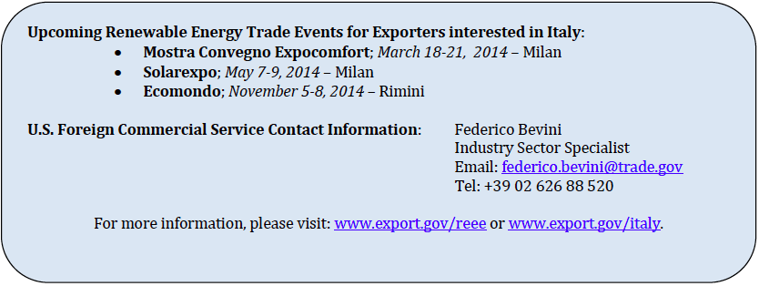

Exporters are often surprised to learn that Italy is one of the world’s most important renewable energy markets. It has a well-diversified renewable energy project base, including significant development to date in the solar, wind, hydropower, geothermal, and biomass industries. By the end of 2012, Italy had installed 16.3GW of solar power (more than any country except Germany), 8.1 GW of wind power, 1.9 GW of biomass, and 882 MW of geothermal energy.
ITA expects solar power to account for the most exports to Italy in the short-term, as most new renewable energy investment is expected to focus on solar development. In fact, ITA anticipates that Italy will install the fifth most solar capacity globally through 2015. Though the market will be considerably smaller than the solar market in China, Japan, and India, it is expected to provide significant export opportunities across a variety of solar subsectors.
Overview of the Renewable Energy Market
A generous Feed-in-Tariff (FIT) regime and renewable portfolio standards have driven Italy’s renewable energy market since 2005. In 2009, the Italian Government committed to obtaining 17 percent of the country’s electricity from renewable sources by 2020.2 However, due to the rapid adoption of technologies like wind and solar, the share of renewables in Italy’s electricity mix reached 28 percent in 2012, nearly a decade ahead of Italy’s stated goals.
Since the Government launched incentives eight years ago, more than 526,000 solar installations have been completed, including several large utility-scale PV projects in southern Italy. Northern urban areas conversely have witnessed a boom in roof-mounted systems.
Yet the incentives proved costly to the Government. In response to rising costs and economy-wide fiscal challenges, Italy introduced a degression mechanism for reducing FIT rates in 2012, as well as an overall cap on spending and a registry system to control future capacity installations.
Feed-in premiums replaced fixed tariffs for larger PV projects in June 2013. Shortly thereafter, Italy’s national grid operator, GSE, announced that FIT spending to support solar development had reached Italy’s cap of €6.7 billion. As a result, there is currently no FIT scheme in place to support new solar PV installations, but installers of PV panels can still benefit from tax deductions for renovation works and from Italy’s “net metering” scheme. FITs, green certificates and other types of incentives still apply to other renewable energy sources.
In total, the new incentive mix is expected to be successful, albeit less so than the previous policy regime. Estimates indicate that roughly 3.5 GW of new solar power, 2 GW of new wind power (both onshore and offshore), and 990 MW of new biomass development will be installed through 2015.
This Top Markets case study is provided as a resource for U.S. exporters by the International Trade Administration. Every effort has been made to ensure that the information presented in this report is complete and accurate as of the date of publication; however, the U.S. Government assumes no responsibility or liability for any errors or omissions. Readers are advised to independently verify any information contained in this intelligence brief prior to relying on it. The information provided in this report does not constitute legal advice. Readers are further advised to conduct their own due diligence and seek the advice of legal counsel before entering into business ventures or other commercial arrangements in this market.
Challenges and Barriers to Renewable Energy Exports
The new incentive program includes a differentiated FIT scheme for different technologies and project sizes. Non-solar PV renewable energy projects over 1 MW, for example, qualify for a base rate plus a premium for the specific technology used in the project. The base tariff is determined based on bids in a tendering process, but must be derived between six size classes and two separate applications (rooftop and all others).
Additionally, all but the smallest renewable energy projects must now apply to a national registry that tracks incentives and installed capacity to ensure that each project is assigned the premium incentive it deserves. Incentives for each technology will be capped on an annual basis.
For many developers, the new incentives add considerable complexity to the market, which in the short-term is expected to slow investment as financiers decipher how best to move forward. The uncertainty, however, presents an opportunity for many American firms that have expertise navigating the complex policy environment in the United States, particularly financial services firms and legal experts.
An additional obstacle to U.S. renewable energy exports is the strong competition from European firms and lower cost Asian suppliers. European-based companies naturally face lower transportation costs, often putting U.S. suppliers at a price disadvantage. For large or commoditized products, exports are thus largely unlikely due to transportation costs. But, more easily transported products like solar cells, modules, and biomass feedstocks can find opportunities – as can new or innovative products that have not been deployed at scale in Italy to date.
Opportunities for U.S. Companies
Italy’s renewable energy project pipeline remains deep and relatively well funded despite recent policy changes that some analysts have suggested could slowly withdraw investment capital from the market. As a result, ITA expects export opportunities to remain – although American companies are not expected to see any new competitive advantages through 2015, making exports difficult.
Solar
In the short-term, Italy’s new policy incentives are expected to support smaller, distributed generation systems. Almost all of the newly permitted solar installations will be systems under 200 kW and be used in residential and commercial settings. These kinds of systems are already well developed in the United States and should provide U.S. exporters some comparative advantage, particularly those firms with experience leasing solar equipment.
Exporters of solar modules for utility-scale projects will likely find larger opportunities elsewhere, as most products for this market segment will often be sourced either from Europe or lower-cost suppliers from Asia.
Wind
Wind energy is the second-most installed renewable energy technology in Italy, with a cumulative installed capacity of 8.1 GW.10 U.S. wind energy exporters, facing stiff competition from European suppliers, will likely need to offer wind turbine component parts, or a niche product where they have a competitive advantage. For example, Northern Power, a small wind company based in Vermont used Ex-Im financing to facilitate the sale of 55 of its 100 kW wind turbines for FIT projects in Italy. Finding similar projects and utilizing Ex-Im financing could lead to additional exports for American companies.
Most Italian wind developers will likely source turbines, towers, and other large equipment from local or regional manufacturers located elsewhere in the European Union. Nevertheless, exporters of services associated with these products may find some opportunities, although exports are expected to be limited.
Biomass
Italy ranks sixth on ITA’s list of top biomass pellet markets for U.S. exporters in the near-term. The first auction under the new premium FIT program in January 2013 saw biomass quotas fully subscribed, indicating a pipeline of projects that should support U.S. exports in the short-term.11 According to Bloomberg New Energy Finance, 123 MW of new biomass or waste-to-energy projects have been announced in Italy. If these projects are ultimately developed, U.S.-based technology and expertise should be well positioned in the market to support export sales.
Geothermal
There are currently no new geothermal facilities planned in Italy. Yet interest in geothermal energy appears to be growing, and given the United States’ competitive position in the industry, early stage geothermal development assistance, like resource mapping, could entice enough Italian interest in the sector that investment and development may follow.


1. EurObserv’ER report (http://www.eurobserv-er.org/)
2. Partly as a result of the European Renewable Energy Directive in 2009 (2009/28/EC)
3. Corriere della Sera newspaper, Edilportale website
4. Bloomberg New Energy Finance, “Italy Set to Cease Granting Tariffs for New Solar Projects” (June 11, 2013) pp. 1
5. BNEF Country Dashboard: Italy
6. BNEF Country Dashboard: Italy; and ITA’s calculations
7. Paul Gipe, “Comment: New Italian solar PV tariffs are complex and robust,” Renewable Energy Focus
8. BNEF Country Profile.
9. Bloomberg New Energy Finance, “The end of Italy’s PV FIT – but no its market” (June 18, 2013), pp. 4
10. The European Wind Energy Association (EWEA), Wind in Power: 2012 European Statistics, February 2013, http://www.ewea.org/fileadmin/files/library/publications/statistics/Wind_in_power_annual_statistics_2012.pdf.
11. Bloomberg New Energy Finance, “Feed-in-premium Policy Review,” 15 January 2013.
12. BNEF database of power plants (filter: Italy/biomass and waste to energy/announced and partially commissioned)
13. Bloomberg New Energy Finance,” Italy Feed-in Premiums/Tariffs – Geothermal,” Policy Detail, Updated January 15, 2013
About the Office of Energy and Environmental Industries
The Office of Energy and Environmental Industries (OEEI), a part of the International Trade Administration’s Industry and Analysis unit, is dedicated to enhancing the global competitiveness of U.S. energy and environmental companies, expanding their market access, and increasing their exports. Industry analysts perform strategic research and analysis in order to shape and implement trade policy, create conditions that encourage innovation, lower the cost of doing business, and promote U.S. economic growth. For more information or to access other reports related to the Renewable Energy and Energy Efficiency Export Initiative, contact the office at (202) 482-5225 or visit www.export.gov/reee.
The International Trade Administration’s mission is to create prosperity by strengthening the competitiveness of U.S. industry, promoting trade and investment, and ensuring fair trade and compliance with trade laws and agreements.